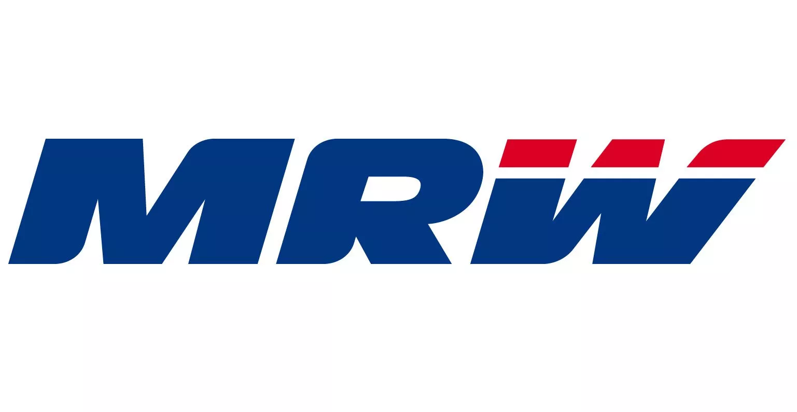
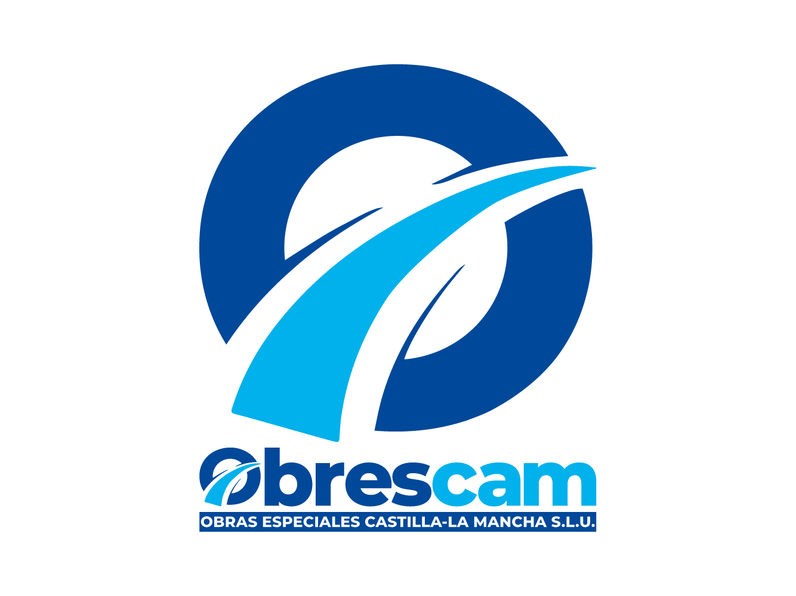

Técnico en Gestión Administrativa
IES Pedro Mercedes
Base reglada en procesos administrativos, organización documental y funcionamiento de oficina.
Junio 2024
Perfil administrativo
Tengo base académica en gestión administrativa y administración y finanzas, junto con prácticas reales en empresa y capacidad para organizar, atender y apoyar tareas documentales.
Base académica
IES Pedro Mercedes
Base reglada en procesos administrativos, organización documental y funcionamiento de oficina.
Junio 2024
IES Pedro Mercedes
Grado superior orientado a gestión empresarial, operaciones administrativas y funcionamiento interno de empresa.
Septiembre 2024 - Marzo 2026
CEOE
Formación complementaria en análisis de datos y uso de Power BI como herramienta de apoyo y visualización.
2025
Experiencia relacionada

Tareas generales de oficina, gestión de correos, llamadas, rutas y herramientas digitales de la franquicia.

Apoyo administrativo en tareas de gestión, organización y seguimiento documental en empresa.
Tras finalizar las prácticas, contratado como trabajador administrativo: gestión, organización y seguimiento documental.
Obrescam
En Obrescam he apoyado tareas administrativas y he detectado procesos repetitivos que podían organizarse mejor con herramientas propias, especialmente en documentación de licitaciones y RRHH.
Los proyectos técnicos están explicados en la sección de Desarrollo, porque combinan Python, automatización web, generación documental y uso de Codex como apoyo para análisis y mejora del flujo.